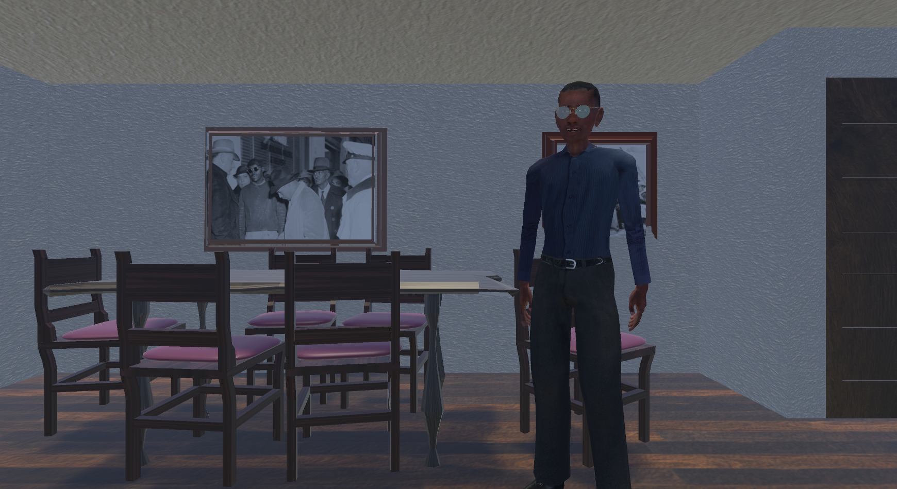
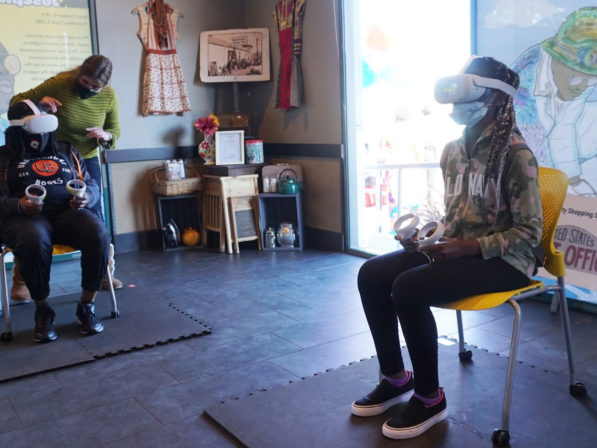
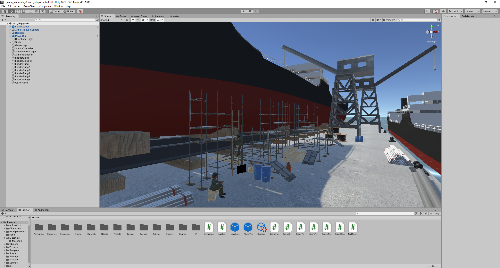
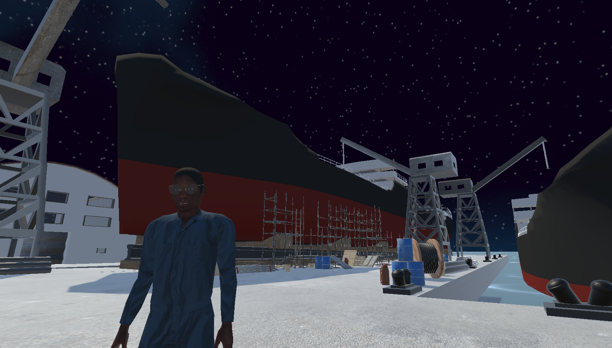

Overview & Responsibilities
Winning 2 Webby Anthem awards, A Way Out of No Way was a collaborative effort between XR Libraries and students from Marin City's historically disadvantaged Black community. It revealed the marginalized history surrounding advancements in civil rights in the wartime 1940s.
As Technical Lead and Producer on the project, I was present throughout all stages of production from conceptualization to shipping. I established a detailed production roadmap for developing an indie VR title on the Unity engine, producing a complete game design document. I then was tasked with creating a prototype, writing the basic game logic in Unity C#, planning an asset library for each environment, and gray-boxing the three levels.
Cirriculum Development
This project was extremely unique by nature of how its 3D artists and writers were to be sourced from the class I designed that I would be teaching in parallel to the development of the game, Introduction to 3D Modeling for VR Games. The class was to be treated as professional training for a paid internship role, but participants were also awarded UC class credits for their efforts as well.
My students, some descendants of the brave and industrious workers we were depicting in our game, arrived with passion and excitement--but little to no skill with technology--largely attributable to the historical marginalization of the community of Marin City. My responsibility as curriculum designer and instructor was to craft lesson plans and pedagogical strategies that would effectively interface with my students--but also contribute to our game development deliverables.
The result of integrating the class curriculum with the internship was incredible. The students produced beautiful 3D assets for the game, learning essential industry skills in the process. In addition, my efforts to plan the technical production of the project amounted to a narrative complete, shipped product that can be downloaded and sideloaded to any Oculus device.
